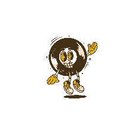

>
>
>
>
"Metalcore is a fusion genre that combines elements of hardcore punk and extreme metal. It originated in the late 1980s and is known for its use of breakdowns, heavy guitar riffs, and double bass drumming. Metalcore vocalists often scream, but may also use standard singing or death growls.
Breakdowns: Slow, intense passages that are good for moshing Guitar riffs: Heavy guitar riffs that often use percussive pedal tones Drumming: Double bass drumming and hardcore blast beats Vocals: Screaming, death growls, and sometimes standard singing
Metalcore is considered to be a subgenre of both metal and hardcore, and has several subgenres of its own, including melodic metalcore and mathcore. Progressive metalcore is a subgenre that emphasizes technical guitar-driven songs, and may include guitar solos. Deathcore is another subgenre that combines metalcore with death metal, and features death metal guitar riffs, blast beats, and metalcore breakdowns."
